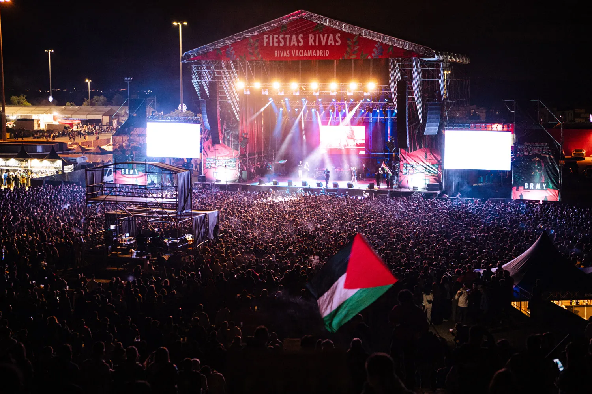
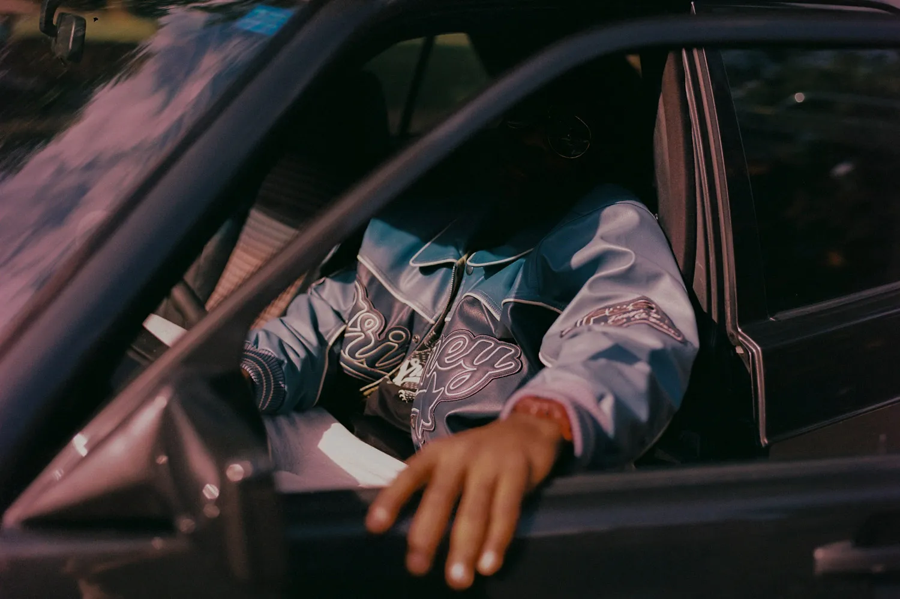
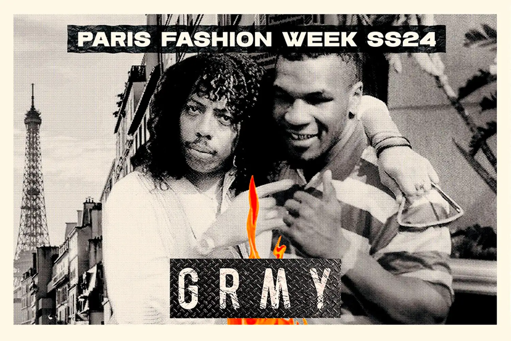
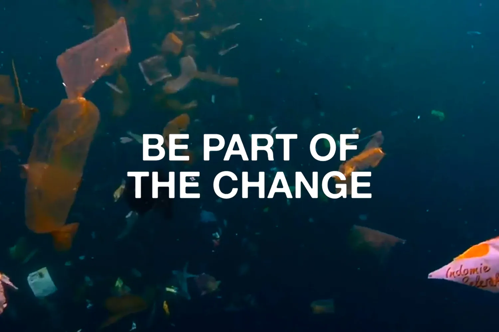
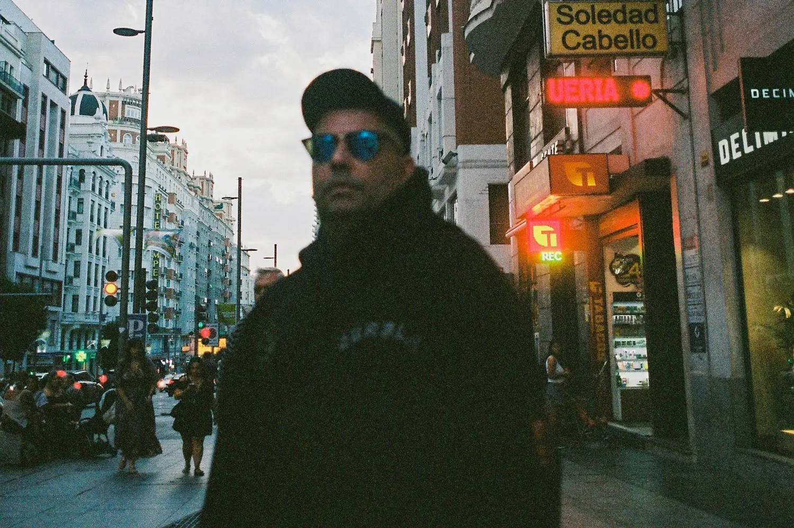

- HOME
- GALLERY
- NOTICE


Ya son 5 ediciones. 5 ediciones donde hemos puesto el grito de ‘Palestina libre’ en los cielos. Este año más que nunca se necesitaba compromiso y conciencia, y se ha superado con creces. Apenas 10 días duraron las entradas a la venta. 14 mil personas abarrotaban un recinto donde no cabía ni un alfiler. De principio a fin. 9 horas de música ininterrumpida con un claro mensaje: apoyar al pueblo palestino por el genocidio al que está siendo sometido. Regresaban al line up nombres como Hoke, Ill Pekeño, Ergo Pro, Israel B y Costa. Otros como Ptazeta, La Zowi, Abhir, Ébano y Grecas se estrenaban con tremendo éxito. No podía faltar Grimey TV como host del evento realizando las entrevistas más divertidas a lomos de un carrito de golf. El éxito de un festival más que asentado es presagio de que el año que viene nos volveremos a ver las caras con todos vosotrxs. ¿No?

La esencia de la calle brilla en cada prenda de ‘Madrid’. Inspirada en los inicios de Grimey, esta línea captura la esencia del streetlife en una colección donde destacan los chándals de terciopelo. Desde Madrid, lo mejor de toda Europa. Gatos, ghetto fabulous. La joya de la cápsula es una chaqueta de cuero sintético repleta de parches: Eat What You Kill, Madrid City Roadrunners, Madrid The Connoisseur, Fuego y Saqueo… Como broche, no podía faltar la corona que la ciudad se merece y nuestra propia versión del oso y el madroño.

Por primera vez en su historia, GRIMEY estará presentando su próxima temporada durante la Paris Fashion Week. Qué mejor entorno para mostrar todos los detalles de lo que será la colección Spring Summer 2024. Pero eso no es todo. Mano a mano junto a la icónica marca NAUTICA nace ‘Mighty Harmonist’, cápsula en colaboración inspirada en los años 90. Una auténtica celebración de la época dorada de la moda que se podrá ver por primera vez en la Capital Francesa. Además del showroom que abrirá sus puertas los días 21, 22, 23 y 24, el 21 de junio y con motivo de la ‘Fete de la Musique’ se celebrará una fiesta en la que actuará Di-Meh, artista suizo. También habrá diversos DJ sets a cargo de Mel Woods, 22Heures30, Yibril y Kaloncha Sound.

El mundo produce aproximadamente 300 millones de toneladas de residuos plásticos cada año. Actualmente sólo el 14% se recolecta para el reciclaje. En esta temporada el 30% de los tejidos de nuestras colecciones están certificados según las Normativas de Sostenibilidad actuales. Son producciones controladas y limpias que producen menos residuo, usan menos agua y con una cantidad mínima de desechos. Un sistema óptimo de reciclaje. Esto comprende no sólo la fabricación del producto respetando criterios medioambientales sino también sociales y conductuales. Nuestras fábricas y principales proveedores están Certificados con auditorias constantes para cumplir los requisitos de un sistema sostenible y en continua mejora. Empaquetados en bolsas biodegradables fabricada a partir de plantas y resinas compostables no tóxicas. Una bolsa de plástico necesita al menos 100 años para descomponerse. Nuestras bolsas compostables se descompone en 6 meses.

Tenemos el honor de presentar algo que hemos deseado desde hace mucho tiempo. Hemos creado una cápsula mano a mano junto a uno de los sellos de rap más influyentes de la historia, Gamberros Pro, y con su artista franquicia, Chirie Vegas. Esta idea ha estado en nuestras cabezas durante mucho tiempo y pensamos que es el momento perfecto para llevarlo a caboGrimey nació en la época más activa del colectivo y tiene muchos vínculos con sus artistas, y qué mejor manera de celebrar nuestros quince años de vida que haciendo un conjunto de prendas inspiradas en Chirie y GP. Sudaderas, pantalones de algodón, parka, gorras y camisetas componen 'Pasión Gamberra', una cápsula llena de códigos para los más puros, pero siendo lo más atemporal que hemos hecho hasta la fecha. Puro espectáculo.